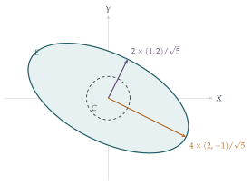

The transformation \(T\) from \(\begin{pmatrix} x \\ y \end{pmatrix}\) to \(\begin{pmatrix} X \\ Y \end{pmatrix}\) is given by \[\begin{pmatrix} X \\ Y \end{pmatrix} = \frac25\begin{pmatrix} 9 & -2 \\ -2 & 6 \end{pmatrix}\begin{pmatrix} x \\ y \end{pmatrix}.\] Show that \(T\) leaves the vector \(\begin{pmatrix} 1 \\ 2 \end{pmatrix}\) unchanged in direction but multiplied by a scalar, and that \(\begin{pmatrix} 2 \\ -1 \end{pmatrix}\) is similarly transformed.
The circle \(C\) whose equation is \(x^2 + y^2 = 1\) transforms under \(T\) to a curve \(E\). Show that \(E\) has equation \[8X^2 + 12XY + 17Y^2 = 80,\] and state the area of the region bounded by \(E\). Show also that the greatest value of \(X\) on \(E\) is \(2\sqrt{17/5}\).
Find the equation of the tangent to \(E\) at the point which corresponds to the point \(\frac15(3, 4)\) on \(C\).
The hook
A matrix transformation usually moves every vector to a new direction. But many matrices have a few special directions they do not turn at all, only stretching or shrinking along them. These are their eigenvectors (from the German eigen, “own” or “characteristic”), and the stretch factors are their eigenvalues. When there are enough of them, as there always are for a symmetric matrix like the one in this question, the transformation becomes transparent: in the right coordinates it is just a stretch along two axes.
This question finds the eigenvectors of a particular matrix and uses them to understand what it does to a circle. Eigenvectors are one of the most useful ideas in all of applied mathematics. They describe the natural vibrations of a bridge, the principal axes of a spinning object, the energy levels of an atom, the most important directions in a cloud of data, and the ranking of web pages by Google’s original PageRank algorithm.
Before you start
What does it mean for \(T\) to leave a vector “unchanged in direction but multiplied by a scalar”? Write it as an equation.
It means \(T\mathbf{v} = \lambda\mathbf{v}\) for some number \(\lambda\): \(\mathbf{v}\) is an eigenvector with eigenvalue \(\lambda\). Notice that the two vectors in the question, \((1, 2)\) and \((2, -1)\), are perpendicular. That is not a coincidence: the matrix is symmetric, and symmetric matrices always have perpendicular eigenvectors.
Working it through
Stage 1 The eigenvectors
\[T\begin{pmatrix} 1 \\ 2 \end{pmatrix} = \frac25\begin{pmatrix} 9 - 4 \\ -2 + 12 \end{pmatrix} = \frac25\begin{pmatrix} 5 \\ 10 \end{pmatrix} = 2\begin{pmatrix} 1 \\ 2 \end{pmatrix}, \qquad T\begin{pmatrix} 2 \\ -1 \end{pmatrix} = \frac25\begin{pmatrix} 20 \\ -10 \end{pmatrix} = 4\begin{pmatrix} 2 \\ -1 \end{pmatrix}.\] So \((1, 2)\) is stretched by \(2\) and \((2, -1)\) by \(4\).■
Stage 2 The image of the circle
To find the equation of \(E\), express \(x\) and \(y\) in terms of \(X\) and \(Y\) (invert the matrix), and substitute into \(x^2 + y^2 = 1\).
The matrix \(\frac25\begin{pmatrix} 9 & -2 \\ -2 & 6 \end{pmatrix}\) has determinant \(\frac{4}{25}(54 - 4) = 8\), and its inverse is \(\frac{1}{20}\begin{pmatrix} 6 & 2 \\ 2 & 9 \end{pmatrix}\). So \(x = \frac{6X + 2Y}{20}\) and \(y = \frac{2X + 9Y}{20}\), and \(x^2 + y^2 = 1\) becomes \[(6X + 2Y)^2 + (2X + 9Y)^2 = 400 \quad\Longrightarrow\quad 40X^2 + 60XY + 85Y^2 = 400,\] which, divided by \(5\), is \(8X^2 + 12XY + 17Y^2 = 80\).■
What shape is \(E\), and what is its area? Use the eigenvectors.
The unit circle has radius \(1\) in every direction. In the direction of \((2, -1)\) it is stretched by \(4\), and in the perpendicular direction \((1, 2)\) by \(2\). So \(E\) is an ellipse with semi-axes \(4\) and \(2\), along the eigenvector directions (Figure 7.2.1), and its area is \(\pi \times 4 \times 2 = 8\pi\). (Equivalently, any linear map multiplies areas by \(|\det T| = 8\), and the circle has area \(\pi\).)
Stage 3 The greatest value of \(X\)
On \(C\), \(X = \frac25(9x - 2y)\). How large can \(9x - 2y\) be when \(x^2 + y^2 = 1\)?
\(9x - 2y\) is the dot product of \((9, -2)\) with the unit vector \((x, y)\), so its largest value is \(|(9, -2)| = \sqrt{85}\), attained when \((x, y)\) points along \((9, -2)\). Hence the greatest value of \(X\) is \(\frac25\sqrt{85} = 2\sqrt{\frac{85}{25}} = 2\sqrt{\frac{17}{5}}\).■
Stage 4 A tangent
The point \(\frac15(3, 4)\) on \(C\) has tangent line \(3x + 4y = 5\). A linear map sends tangent lines to tangent lines. Use this to find the tangent to \(E\).
Substituting \(x = \frac{6X + 2Y}{20}\), \(y = \frac{2X + 9Y}{20}\) into \(3x + 4y = 5\): \[\frac{3(6X + 2Y) + 4(2X + 9Y)}{20} = 5 \quad\Longrightarrow\quad 26X + 42Y = 100,\] that is, \(13X + 21Y = 50\).■
(Check: the point itself is \(T\bigl(\frac35, \frac45\bigr) = \bigl(\frac{38}{25}, \frac{36}{25}\bigr)\), and \(13 \cdot \frac{38}{25} + 21 \cdot \frac{36}{25} = \frac{494 + 756}{25} = 50\).)

Looking back
Eigenvectors are the natural axes. In the coordinates given by the eigenvectors, \(T\) is just a stretch by \(4\) and by \(2\), and its effect on a circle is obvious.
Determinants measure area. The area of \(E\) is \(|\det T|\) times the area of \(C\).
Linear maps preserve tangency. Transforming the circle’s tangent gave the ellipse’s tangent with almost no calculation.
What’s really going on
Every real symmetric matrix has a full set of perpendicular eigenvectors, with real eigenvalues. This is the spectral theorem, one of the central results of a first linear algebra course. It says that every symmetric linear map is, in suitable perpendicular coordinates, just a stretch along each axis. Equivalently, every quadratic form like \(8X^2 + 12XY + 17Y^2\) can be rotated into the form \(\lambda_1 u^2 + \lambda_2 v^2\), which is why every central conic is an ellipse or hyperbola with perpendicular axes (the principal axis theorem). The idea goes back to Cauchy in the 1820s, who used it to find the principal axes of quadric surfaces and of the stress in a solid body.
Symmetry is what makes this work. A matrix that is not symmetric need not be so obliging: a rotation through \(90^\circ\) turns every direction, so it has no real eigenvectors at all, and the shear \(\begin{pmatrix} 1 & 1 \\ 0 & 1 \end{pmatrix}\) has only one eigenvector direction, so it is not a stretch along any pair of axes.
Eigenvectors everywhere
Here are a few of the places eigenvectors appear.
Vibrations. A system of masses and springs vibrates in normal modes, patterns in which every part moves in step at a single frequency. These are eigenvectors of a matrix, and the frequencies come from the eigenvalues (Section 11.2).
Data. The directions in which a cloud of data points is most spread out are the eigenvectors of its covariance matrix. Finding them is principal component analysis, one of the basic tools of statistics and machine learning (Section 13.7).
Quantum mechanics. The possible results of measuring a quantity are the eigenvalues of a matrix (or operator), and the energy levels of an atom are eigenvalues.
Web search. Google’s PageRank, the original idea behind the search engine, ranks pages by the entries of the eigenvector, with eigenvalue \(1\), of a huge matrix describing the links between pages.
The thinking skill
To understand a linear transformation, find the directions it does not rotate. In those coordinates it becomes simple.
This is the same idea as choosing the Fermat point as origin in Section 5.6, or changing variables to simplify a map in Section 2.8: the right coordinates make the structure obvious.
Try this next
Finding eigenvalues. Show that the eigenvalues of \(\begin{pmatrix} a & b \\ c & d \end{pmatrix}\) are the roots of \(\lambda^2 - (a + d)\lambda + (ad - bc) = 0\), and check that the matrix in the question gives \(\lambda = 2\) and \(4\).
Perpendicular eigenvectors. Show that if \(\mathbf{M}\) is symmetric and \(\mathbf{Mu} = \lambda\mathbf{u}\), \(\mathbf{Mv} = \mu\mathbf{v}\) with \(\lambda \neq \mu\), then \(\mathbf{u} \cdot \mathbf{v} = 0\). (Hint: compute \(\mathbf{v} \cdot \mathbf{Mu}\) in two ways.)
A rotation. Show that the rotation matrix \(\begin{pmatrix} \cos\theta & -\sin\theta \\ \sin\theta & \cos\theta \end{pmatrix}\) has no real eigenvectors unless \(\theta\) is a multiple of \(\pi\). What are its complex eigenvalues?
Powers. Using the eigenvectors, find \(T^n\begin{pmatrix} 1 \\ 0 \end{pmatrix}\). (Hint: write \((1, 0)\) as a combination of \((1, 2)\) and \((2, -1)\).)
Further reading
Gilbert Strang, Introduction to Linear Algebra (Wellesley-Cambridge). Chapter 6 is an excellent introduction to eigenvalues and their applications.
Kurt Bryan & Tanya Leise, “The $25,000,000,000 eigenvector: the linear algebra behind Google”, SIAM Review 48 (2006). Readable and freely available.
3Blue1Brown, Essence of Linear Algebra (video series, free online). Beautiful animations of exactly the geometric ideas in this section.